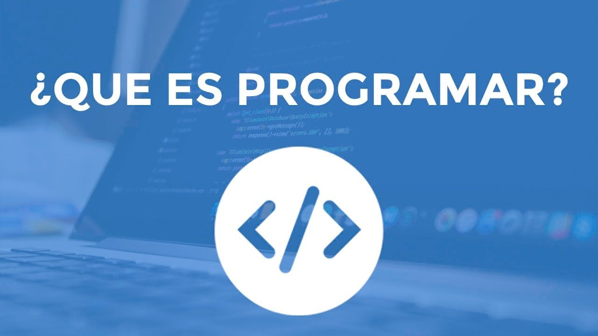

En esta fase se debe de analizar la problemática a la que se le quiere dar solución, identificar todos los recursos con los que se cuenta (tecnológicos, humanos, legales, financieros entre otros). Aquí se va a definir qué es lo que debe hacer el programa. También se van a identificar los requerimientos del usuario.

Análisis del problema
Diseño del algoritmo
Esta es una fase interesante en la cual se debe realizar la representación gráfica, que pueda mostrar la solución del problema, puede ser a través de un diagrama de flujo; por ejemplo, se van a identificar los datos de entrada, cómo serán procesados y la salida o resultado que se va a obtener con este diseño.
Codificación
Aquí es donde se podrá elegir el lenguaje de programación que se empleará para desarrollar el software. Siguiendo la metodología adecuada.
Ejecución y prueba
En esta fase se realizarán todas las pruebas necesarias para garantizar el buen funcionamiento del programa y así garantizar la calidad del mismo.

Java, Python, Ruby, PHP y C++ son algunos de los más usados en la actualidad. Conocerlos y dominarlos puede ayudarte a posicionarte como programador y a encontrar tu camino a través del código.